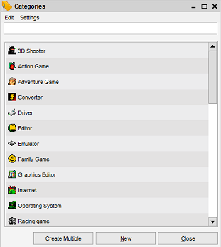

Administration of Property Items
Menu Path > Administration > Maintain
The administration menu allows you to maintain the property items, such as categories, countries and states.
The overview shows all the items in a listing, sorted alphabetically. You can edit an item by opening it.
Double click on the row and it will open the item form from where you can edit the item.

If you right-click on one of the items you can choose to delete the item as well (note that you can also open it from here, same as
a double-click). The item cannot be deleted in case it has been used by other items. So if you have a country which has been assigned to 3 movies
you won't be able to delete the item. The system will notify of this. To delete it you'll first have to remove all the references to the item.
To view how the item has been used take a look at the related item tab of the item form.